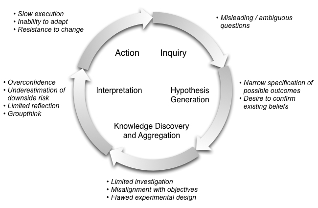

on
Understanding the Now - The Role of Data in Adaptive Organizations
Slow and Unaware
It was 2005. The war in Iraq was raging. Many of us in the national security R&D community were developing responses to the deadliest threat facing US soldiers: the improvised explosive device (IED). From the perspective of the US military, the unthinkable was happening each and every day. The world’s most technologically advanced military was being dealt significant blows by insurgents making crude weapons from limited resources. How was this even possible?
The war exposed the limits of our unwavering faith in technology. We depended heavily on technology to provide us the advantage in an environment we did not understand. When that failed, we were slow to learn. Meanwhile the losses continued. We were being disrupted by a patient, persistent organization that rapidly experimented and adapted to conditions on the ground.
To regain the advantage, we needed to start by asking different questions. We needed to shift our focus from the devices that were destroying US armored vehicles to the people responsible for building and deploying the weapons. This motivated new approaches to collect data that could expose elements of the insurgent network.
New organizations and modes of operation were also required to act swiftly when discoveries were made. By integrating intelligence and special operations capabilities into a single organization with crisp objectives and responsive leadership, the US dramatically accelerated its ability to disrupt insurgent operations. Rapid orientation and action were key in this dynamic environment where opportunities persisted for an often unknown and very limited period of time.
This story holds important and underappreciated lessons that apply to the challenges numerous organizations face today. The ability to collect, store, and process large volumes of data doesn’t confer advantage by default. It’s still common to fixate on the wrong questions and fail to recover quickly when mistakes are made. To accelerate organizational learning with data, we need to think carefully about our objectives and have realistic expectations about what insights we can derive from measurement and analysis.
Embracing Uncertainty
In recent years, decision-makers have embraced a number of simplistic misconceptions. One of particular concern is the idea that our ability to predict reliably improves with the volume of available data. Unfortunately reality is more complex.
One of the key drivers of prediction performance is the stability of the environment. When environmental conditions change, our ability to predict often degrades. No amount of historical data will inform us about the duration of a particular pattern or the nature of the change to follow.
Our globalized world relies on complex, interconnected systems that produce enormous volumes of data; yet network effects and cascading failures routinely surprise us. In many ways, we know more than ever about the present; meanwhile the future remains stubbornly uncertain.
Data-driven prediction is viewed by some as a potential antidote to the risk associated with delay in action. This is a dangerous belief in complex environments. Overconfidence coupled with delay significantly magnifies the cost of prediction errors when they occur.
From Prediction to Adaptation
To combat this, a shift in mindset is required. We need to shift from predicting the future to understanding the now. By focusing our attention on the present, we uncover and pursue existing opportunities as opposed to projected ones that may never come to pass. By accelerating our pace of response, we increase our potential to benefit from surprises that will surely come. At the same time, we mitigate the cost of our mistakes.
Difficulties in the organizational learning process can take many forms. The following diagram highlights problems that commonly arise at different stages of the process.

In many respects, the challenges we face are struggles with preconceptions at both the individual and group level. Adaptation requires an openness to alternatives and a rejection of the temptation to simply confirm existing beliefs. Leadership is absolutely key to foster a culture where curiosity and experimentation are core values.
In an adaptive organization, measurement and analysis can be valuable tools for understanding the present environment and evaluating the effectiveness of our actions. Advances in Internet and mobile technologies have dramatically expanded the scope and rate at which certain types of information can be collected. With clearly defined objectives, these capabilities can be leveraged to uncover opportunities much more rapidly.
Once a course of action has been selected and implemented, adaptive organizations also reflect on both the derived benefit and the efficiency of execution. Measurement and analysis can illuminate the resulting changes in the environment and the level of time and effort required to achieve that outcome. This can serve as the basis for more thoughtful discussion of ways to accelerate the organization’s response to changing conditions.
A Holistic View
Too often when lauding the potential of data-driven decision-making, the technology sector focuses solely on the data analytic tools they believe are central to supporting their envisioned future. All the while, more fundamental organizational issues determine the ultimate impact of data in the learning process. As the IED threat in Iraq made clear, an unwillingness to adapt coupled with sluggish action can have dramatic consequences in a dynamic environment. Only a dogged focus on present opportunities coupled with efficiency of action will mitigate the risks of a persistently uncertain future. Data can be a powerful resource for accelerating the learning process. Yet organizational culture and leadership remain central determinants of the organization’s ability to effectively leverage its potential.
Many thanks to Chrys Wu, Mark Huberty, and Beau Cronin for helpful discussions.
Originally appeared on the O’Reilly Data blog.